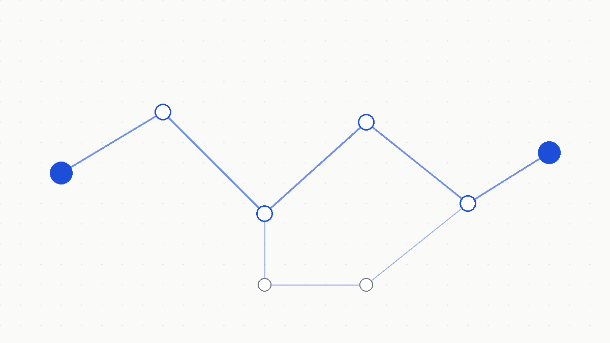

Featured · Agentic AI · Backend
IncidentIQ
An incident-response agent that helps on-call engineers diagnose production issues with evidence, and never changes production without human approval.
- LangGraph agent with persisted state that survives process restarts
- Hybrid retrieval: pgvector similarity + Postgres full-text, fused with reciprocal rank fusion
- Write actions gated structurally, not by prompt; evaluation harness publishes every result
0.80 Recall@5
0.92 MRR
Approval API, React frontend, and tracing in progress.
View on GitHub